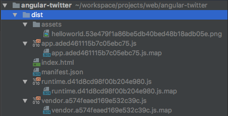

Angular从零开始 - 04. AoT预编译和生产环境配置2017-06-27
在我们的项目刚开始的时候就准备好AOT及其他生产环境配置，这样能更早的发现问题并及时进行调整，如果等到整个项目都做完，代码量已经比较大的时候再去做，可能就会面临很多代码都不兼容AOT的可能，那时再做修改就工作量太大了
什么是AoT
AoT是Ahead-of-time的缩写，与JIT (Just-in-time)相对，在Angular中，AoT即在构建阶段将html模板编译成可执行的js代码，JIT则是在浏览器运行时进行模板编译
事实上只有一个Angular编译器，AOT和JIT之间的差别仅仅在于编译的时机和所用的工具。 使用AOT，编译器仅仅使用一组库在构建期间运行一次；使用JIT，编译器在每个用户的每次运行期间都要用不同的库运行一次。https://angular.cn/docs/ts/latest/cookbook/aot-compiler.html
实现AoT
在官方的cookbook中，使用的ngc来进行AoT编译，但是实际项目中ngc并不能满足需求，比如需要与webpack以及模板引擎和样式预处理器配合时，只用ngc的话会很麻烦。。。因此这里我们使用同样是官方出品的webpack插件@ngtools/webpack
安装
@ngtools/webpacknpm i @ngtools/webpack --save-dev # webpack已经发布3.0了，这里我们顺便升级一下webpack及其他依赖 npm i webpack@latest --save-dev npm update配置
webpack由于AOT编译过程可能会相对耗时，我们在开发环境和生产环境需要做不同的配置，因此首先我们新建一个AOT的webpack配置
- 复制
./webpack.config.js为./webpack.aot.config.js 修改
./webpack.aot.config.js，除了AOT之外，我们也做一些其他针对生产环境的配置，主要包含这几个方面：- 文件名中添加hash，避免缓存。那么为什么不是
a.js?hash=xxx这种形式呢？这跟CDN缓存有关系，假如将来我们需要把静态文件部署CDN，那么a.js?hash=xxx这种形式并不能触发CDN重新请求该文件，即使xxx修改了，用户仍然访问不到最新的a.js。可以参考这篇文章：http://www.infoq.com/cn/articles/front-end-engineering-and-performance-optimization-part1 ts文件使用@ngtools/webpack编译，plugins中添加AotPlugin- 在
./src/main.ts中调用Angular的enableProdMode方法 - 通过
CommonsChunkPlugin提取公共代码
详情见下列代码中的注释：
const path = require('path'); const HtmlPlugin = require('html-webpack-plugin'); const AotPlugin = require('@ngtools/webpack').AotPlugin; const WebpackChunkHash = require('webpack-chunk-hash'); const ChunkManifestPlugin = require('chunk-manifest-webpack-plugin'); const webpack = require('webpack'); const CommonsChunkPlugin = webpack.optimize.CommonsChunkPlugin; const CleanPlugin = require('clean-webpack-plugin'); const DefinePlugin = webpack.DefinePlugin; const dist = path.resolve(__dirname, './dist'); module.exports = { entry: { 'app': './src/main.ts' }, // 生成source map方便调试，source-map会生产独立的map文件，可用于生产环境， // 参考https://doc.webpack-china.org/configuration/devtool/ devtool: 'source-map', output: { // 新版的webpack要求path必须是绝对路径 path: dist, // 文件名中添加基于chunk内容的hash，避免缓存问题， // 参考 https://doc.webpack-china.org/configuration/output/#output-filename filename: '[name].[chunkhash].js', // 配置chunk文件的名称 // 参考 https://doc.webpack-china.org/configuration/output/#output-chunkfilename chunkFilename: 'chunk.[id].[chunkhash].js' }, resolve: { extensions: ['.js', '.ts'], mainFields: ['module', 'browser', 'main'] }, module: { rules: [ { test: /\.ts$/, use: [ // @ngtools/webpack本身会同时编译ts并处理模板， // 所以需要替换掉awesome-typescript-loader和angular2-template-loader { loader: '@ngtools/webpack' } ] }, { test: /\.(png|jpe?g|gif|svg|woff|woff2|ttf|eot|ico)$/, use: [ { loader: 'file-loader', options: { // 文件名中添加基于文件内容的hash，避免缓存 name: 'assets/[name].[hash].[ext]' } } ] }, { test: /\.pug$/, use: [ { loader: 'html-loader', options: { minimize: false } }, { loader: 'pug-html-loader', options: { pretty: false, exports: false, doctype: 'html' } } ] }, { test: /\.less$/, use: [ 'css-to-string-loader', 'css-loader', { loader: 'less-loader', options: { relativeUrls: true } } ] } ] }, plugins: [ new CleanPlugin([dist]), // 编译前删除dist目录 new DefinePlugin({ // 创建一个编译时可用的全局常量`ENV`，让我们可以在代码中区分当前环境，比如在生产环境中调用Angular的`enableProdMode`方法， // 参考 ./src/main.ts 第8 - 12行 // 这里必须用JSON.stringify或者'"prod"'，因为这个插件是直接替换字符串 // 参考 https://doc.webpack-china.org/plugins/define-plugin/ 'ENV': JSON.stringify('prod') }), new HtmlPlugin({ // 指定index.html的模板文件路径 template: path.resolve(__dirname, './src/index.html') }), new AotPlugin({ // 指定tsconfig.json的路径 tsConfigPath: './src/tsconfig.json', // 指定入口模块，`#`井号前面是入口模块文件的路径，不包含扩展名，`#`井号后面是入口模块的类名 entryModule: path.resolve(__dirname, './src/app/app.module#AppModule') }), new CommonsChunkPlugin({ name: 'vendor', minChunks: module => { // 所有node_modules目录下的文件都打包进vendor // 参考https://doc.webpack-china.org/plugins/commons-chunk-plugin/ return (module.resource && (module.resource.indexOf(path.resolve(__dirname, './node_modules')) === 0)) } }), new CommonsChunkPlugin({ // 将runtime和manifest分离出来，避免vendor每次都变化 // 参考https://doc.webpack-china.org/plugins/commons-chunk-plugin/ name: 'runtime', chunks: ['vendor'] }), new ChunkManifestPlugin({ // 在html中内联manifest，减少一个请求，同时使得runtime可以被长期缓存 inlineManifest: true }), new WebpackChunkHash() ], // AOT一般都是为生产环境准备的，所以去掉devServer /*devServer: { historyApiFallback: true, // 404将会重定向至index.html port: 8888 // 端口号 }*/ };- 文件名中添加hash，避免缓存。那么为什么不是
package.json中添加生产环境的构建脚本{ "scripts": { "build:aot": "webpack -p --config ./webpack.aot.config.js --bail --progress" } }-p参数会开启js压缩等webpack内置的优化项目，参考https://doc.webpack-china.org/guides/production/
- 复制
运行编译
npm run build:aot
编译结果：

最后测试一下编译后的文件是不是可以正常执行：
npm run server

OK! 然后我们就可以部署到生产环境中了，部署过程等我们的demo更完善一些的时候再写
本阶段源码
https://github.com/indooorsman/angular-twitter/tree/prod
现在开发构建环境已经基本完成，接下来就开始我们具体的业务编码了，下一篇就先完成登录页吧 :)
EOF
评论